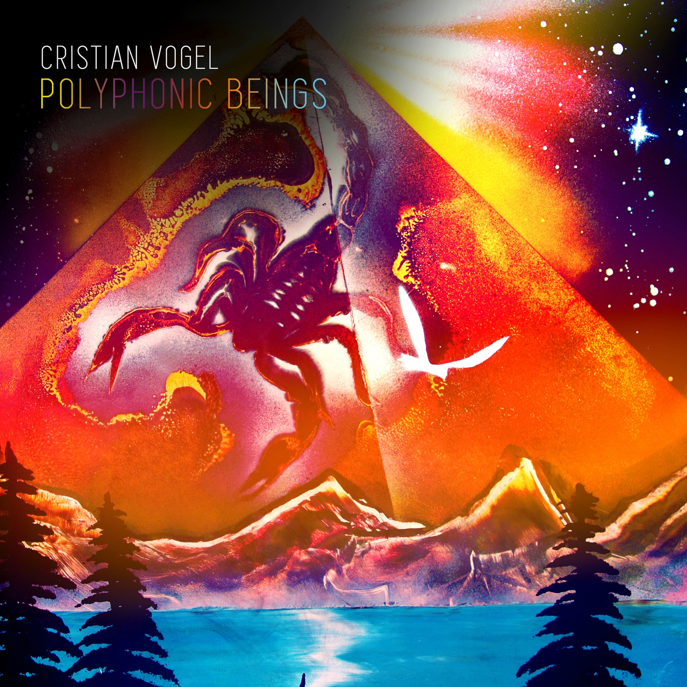

Christian vogel – Polyphonic beings
Geplaatst door: Henk_Ingrid op September 1, 2014
Genre: dance
De pretenties zijn enorm als altijd, bij de Chileense producer Cristian Vogel. Zijn nieuwe album Polyphonic Beings laat hij vergezeld gaan van citaten van de componist Karlheinz Stockhausen, iets over 'atomaire lagen van muzikale perceptie' - probeer het vooral niet te begrijpen.
De intellectuele begeleiding is ook niet nodig. Vanaf nummer één loopt er een lijntje van Vogel richting onderbuik van de luisteraar: Exclusion Waves is een warme en diep groovende dubtechnotrack, die een meditatief genot verschaft en nog uiterst dansbaar is ook.
Meesterschap
Vogel, die in Groot-Brittannië afstudeerde in de hedendaagse klassieke compositie, is een elektronische kunstmuziekveteraan. In de jaren negentig bracht hij streng gekaderde techno uit, op bijvoorbeeld het Duitse label Tresor. Zijn muzikale blik is breder geworden.
Vogel, die in Groot-Brittannië afstudeerde in de hedendaagse klassieke compositie, is een elektronische kunstmuziekveteraan.
In de onweerstaanbare track McCaw's Ghost toont Vogel zijn meesterschap: brute, minimale maar steeds subtiel verschietende ritmes, een door die kille beheersing ondraaglijk spannende opbouw die bij de diep bassende climax, inclusief schurende en distorted synthesizers tot een bijna rockachtige euforie komt.
Gaandeweg worden de composities van Vogel kariger: via harde, stuwende techno in How Many Grapes Went Into That Wine? richting de ruisende minimale dub van LA Banshee 109.
KUNSTZINNIG
Bij slotnummer Society of Hands is de abstrahering voltooid: een Satie-achtige en kosmisch verantwoorde ambienttrack, waar voorgenoemde elektronische muziekpionier Stockhausen trots op zou zijn geweest. Een kunstzinnige maar desondanks laagdrempelige technoplaat met de impact van een inslaande komeet, en dus een meesterstuk van Cristian Vogel. (TEKST: Robert van Gijssel, de Volskrant)
Tracklist:
- Exclusion Waves
- McCaw's Ghost
- How Many Grapes Went Into That Wine
- Lost In The Chase
- LA Banshee
- Forest Gifts
- Spectral Jack (Vinyl Exclusive)
- Society Of Hands